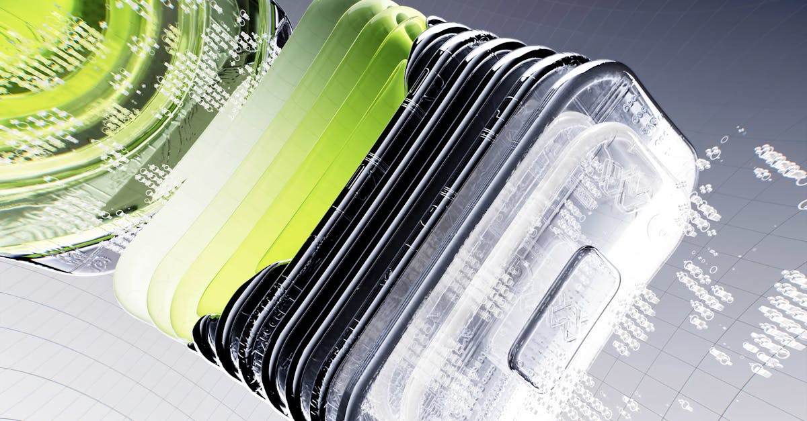

L'IA, Nouveau Moteur de Croissance pour le Conseil Stratégique
Dans un monde où la transformation numérique n'est plus une option mais une nécessité, les cabinets de conseil se réinventent. L'annonce d'Alvarez & Marsal (A&M) de vouloir générer 50% de ses revenus grâce à l'intelligence artificielle d'ici 2028, soit un objectif colossal de 3,5 milliards de dollars, marque un tournant significatif. Cette ambition audacieuse souligne la conviction profonde que l'IA n'est pas qu'une simple tendance technologique, mais un levier stratégique majeur pour la croissance et la compétitivité. Pour les entreprises, qu'elles soient des multinationales ou des PME dynamiques, comprendre et intégrer l'IA devient crucial. La manière dont A&M compte monétiser son expertise en IA pourrait redéfinir les standards du secteur du conseil. Imaginez une entreprise qui utilise l'IA non seulement pour optimiser ses opérations internes, mais aussi pour anticiper les mouvements du marché, détecter des opportunités d'investissement inédites dans les actions, les ETF ou les indices boursiers. C'est précisément dans cette optique que des solutions comme celle proposée par TradePilot AI prennent tout leur sens : un copilote IA dédié au trading, capable d'opérer 24h/24. L'approche d'A&M suggère une démocratisation de l'accès à des analyses et des stratégies sophistiquées, auparavant réservées aux plus grands fonds. La question n'est donc plus de savoir si l'IA va transformer le monde des affaires, mais quand et comment chaque acteur pourra en tirer parti. L'objectif d'A&M est ambitieux, mais il reflète une réalité : l'IA est en train de devenir la pierre angulaire de la performance économique future.
👉 À lire : Nvidia et DeepInfra : L'IA au cœur de la révolution du calcul
Stratégie d'A&M : Au-delà de l'Automatisation, la Création de Valeur
Comment un cabinet de conseil, traditionnellement axé sur l'expertise humaine et l'accompagnement stratégique, peut-il espérer récolter une telle manne financière de l'IA ? La réponse réside probablement dans une approche qui va bien au-delà de la simple automatisation des tâches. Alvarez & Marsal ne vise pas seulement à utiliser l'IA pour améliorer ses propres processus internes, mais surtout à développer et vendre des solutions basées sur l'IA à ses clients. Cela pourrait inclure des plateformes d'analyse prédictive, des outils d'optimisation de portefeuille, des systèmes de détection de fraude ou encore des solutions pour améliorer l'efficacité opérationnelle dans divers secteurs. L'objectif de 3,5 milliards de dollars d'ici 2028 implique une montée en puissance considérable, nécessitant des investissements massifs en recherche et développement, en recrutement de talents spécialisés en IA, et en développement de partenariats stratégiques. Pour les investisseurs, cela représente une opportunité de voir comment une entreprise établie peut pivoter avec succès vers des technologies de pointe. Dans le domaine du trading, par exemple, l'IA peut analyser des volumes de données bien supérieurs à ce qu'un humain pourrait traiter, identifiant des corrélations subtiles et des signaux faibles sur les marchés financiers. Des outils capables de prédire les mouvements des actions, des ETF et des indices boursiers avec une précision accrue pourraient révolutionner la gestion d'actifs. L'ambition d'A&M est de devenir un fournisseur de solutions IA, transformant ainsi sa relation client d'un simple rôle de conseil à celui de partenaire technologique.
👉 À lire : Arm Holdings : L'IA au cœur d'une enquête en Malaisie
IA et Marchés Financiers : Une Synergie Inédite
L'annonce d'Alvarez & Marsal résonne particulièrement dans le monde de la finance et du trading. L'intelligence artificielle a déjà prouvé sa valeur dans l'analyse des marchés, la gestion des risques et l'exécution des ordres. Les algorithmes de trading haute fréquence, par exemple, utilisent l'IA pour prendre des décisions en une fraction de seconde. Cependant, l'ambition d'A&M suggère une application plus large, potentiellement accessible à un public plus vaste que les seuls fonds spéculatifs. Imaginez des outils d'IA capables de :
- Analyser en temps réel les sentiments du marché à partir de millions d'articles de presse, de publications sur les réseaux sociaux et de rapports financiers.
- Identifier des patterns complexes dans les données historiques pour prédire les mouvements futurs des actions, des ETF et des indices boursiers.
- Gérer dynamiquement les portefeuilles d'investissement en fonction des conditions de marché et des objectifs de risque personnalisés.
- Détecter des anomalies et des opportunités d'arbitrage qui échappent à l'analyse humaine traditionnelle.
La promesse d'un chiffre d'affaires de 3,5 milliards de dollars dans ce domaine d'ici 2028 indique une demande croissante pour des solutions d'IA sophistiquées et fiables. Pour les traders individuels et les gestionnaires de fonds, cela signifie un accès potentiel à des outils de plus en plus performants, capables d'améliorer significativement leurs stratégies. L'IA ne remplace pas l'intuition humaine, mais elle l'augmente considérablement, offrant une puissance d'analyse sans précédent. Comme le dirait un expert fictif en trading algorithmique : "L'IA est le nouveau microscope des marchés financiers ; elle nous permet de voir des détails invisibles à l'œil nu." L'approche d'A&M pourrait bien démocratiser l'accès à cette technologie révolutionnaire pour le trading.

Les Défis de l'Implémentation : Talents, Données et Éthique
Atteindre un objectif aussi ambitieux que celui fixé par Alvarez & Marsal n'est pas sans obstacles. La course à l'IA intensifie la demande pour des talents hautement qualifiés – data scientists, ingénieurs en machine learning, spécialistes de l'IA éthique. Ces profils sont rares et très convoités, ce qui représente un défi majeur en termes de recrutement et de rétention. De plus, la qualité et la quantité des données sont primordiales. Pour entraîner des modèles d'IA performants, il faut des jeux de données massifs, propres et pertinents. La collecte, le nettoyage et la gestion de ces données constituent un travail colossal. L'éthique de l'IA est une autre préoccupation majeure. Comment s'assurer que les algorithmes ne reproduisent pas ou n'amplifient pas les biais existants ? Comment garantir la transparence et l'explicabilité des décisions prises par l'IA, notamment dans des domaines sensibles comme la finance ? Alvarez & Marsal devra naviguer ces complexités avec rigueur. L'implémentation réussie de l'IA pour le trading, par exemple, nécessite non seulement des algorithmes performants, mais aussi une compréhension fine des réglementations et des risques associés. Des solutions comme celle de TradePilot AI, qui promettent un trading automatisé 24h/24, doivent non seulement démontrer leur efficacité, mais aussi leur fiabilité et leur conformité. La confiance des clients sera essentielle, et A&M devra prouver qu'elle peut fournir des solutions d'IA robustes, sécurisées et éthiquement responsables.
L'Impact sur les Entreprises : Une Transformation Nécessaire
La stratégie d'Alvarez & Marsal envoie un message clair aux entreprises de tous secteurs : l'intégration de l'IA n'est plus une option, mais une nécessité stratégique pour rester compétitif. Les sociétés qui tardent à adopter l'IA risquent de se retrouver distancées par des concurrents plus agiles et plus innovants. L'IA peut transformer radicalement de nombreux aspects de l'entreprise :
- Amélioration de l'efficacité opérationnelle : Automatisation des processus répétitifs, optimisation des chaînes d'approvisionnement, maintenance prédictive.
- Prise de décision éclairée : Analyse de données avancée pour anticiper les tendances du marché, mieux comprendre les clients et identifier de nouvelles opportunités.
- Expérience client personnalisée : Recommandations sur mesure, chatbots intelligents, parcours client optimisés.
- Innovation produit et service : Développement de nouvelles offres basées sur les capacités de l'IA.
Pour les marchés financiers, cela se traduit par une compétition accrue où les acteurs utilisant l'IA pour analyser les actions, les ETF et les indices boursiers auront un avantage certain. Les entreprises qui ne s'adaptent pas risquent de voir leur valorisation stagner, voire diminuer. L'investissement dans l'IA n'est donc pas une dépense, mais un investissement stratégique pour l'avenir. La capacité d'A&M à monétiser son expertise en IA suggère que les entreprises sont prêtes à payer cher pour des solutions qui leur apportent un avantage concurrentiel tangible. La question pour chaque dirigeant est donc : comment mon entreprise peut-elle tirer parti de l'IA dès maintenant ? L'approche proactive d'A&M pourrait servir de catalyseur pour une adoption plus large et plus rapide de l'IA dans le monde des affaires.

Le Trading par IA : La Révolution en Marche
Le secteur du trading financier est sans doute l'un des domaines où l'impact de l'IA est le plus visible et le plus rapide. L'idée qu'un système d'IA puisse trader pour vous 24h/24, comme le propose TradePilot AI, n'est plus de la science-fiction mais une réalité tangible. L'annonce d'Alvarez & Marsal confirme cette tendance : les acteurs majeurs reconnaissent la puissance de l'IA pour générer de la valeur financière. Les algorithmes d'IA peuvent analyser des quantités phénoménales de données – prix historiques, actualités économiques, rapports d'analystes, données alternatives – pour identifier des opportunités de trading que les humains ne pourraient jamais déceler. Ils sont capables de réagir instantanément aux fluctuations du marché, d'exécuter des transactions avec une précision chirurgicale et de gérer le risque de manière dynamique. La promesse de 3,5 milliards de dollars pour A&M dans le domaine de l'IA suggère que la demande pour des solutions de trading intelligentes est immense. Ces solutions peuvent aller de simples outils d'aide à la décision pour les traders individuels à des systèmes de trading entièrement automatisés pour les institutions financières. L'avantage principal de l'IA dans le trading réside dans sa capacité à éliminer les biais émotionnels – peur, cupidité – qui affectent souvent les décisions humaines. Un algorithme suit sa programmation de manière logique et disciplinée. Que ce soit pour le trading d'actions individuelles, d'ETF diversifiés ou d'indices boursiers complexes, l'IA offre une nouvelle dimension de performance. L'objectif d'A&M de capitaliser sur l'IA renforce la légitimité et l'importance croissante de ces technologies dans notre quotidien financier.
Perspectives d'Avenir : L'IA, un Partenaire Incontournable
L'ambition d'Alvarez & Marsal de faire de l'IA un pilier de sa stratégie financière est révélatrice de l'avenir qui se dessine. Dans les années à venir, il est probable que de nombreux autres cabinets de conseil, entreprises technologiques et institutions financières suivront cette voie. L'IA deviendra un partenaire incontournable pour toute organisation souhaitant prospérer dans une économie de plus en plus numérisée et axée sur les données. Pour les marchés financiers, cela signifie une optimisation continue des stratégies de trading, une meilleure gestion des risques et potentiellement une volatilité accrue à court terme, mais une plus grande efficacité à long terme. Des outils comme celui de TradePilot AI illustrent parfaitement cette évolution, offrant une automatisation avancée pour le trading d'actions, d'ETF et d'indices boursiers. L'enjeu pour les entreprises sera de savoir comment intégrer l'IA de manière éthique et responsable, tout en maximisant ses bénéfices. La collaboration entre l'intelligence humaine et l'intelligence artificielle sera la clé du succès. L'IA ne remplacera pas entièrement l'expertise humaine, mais elle l'augmentera, permettant aux professionnels de se concentrer sur des tâches à plus forte valeur ajoutée, comme la stratégie, la créativité et la relation client. L'objectif de 3,5 milliards de dollars d'A&M n'est peut-être que le début d'une vague de transformation portée par l'IA, redéfinissant les règles du jeu dans de nombreux secteurs.
Conclusion
L'objectif d'Alvarez & Marsal de générer 3,5 milliards de dollars grâce à l'intelligence artificielle d'ici 2028 est une déclaration audacieuse qui témoigne de la puissance disruptive de l'IA. Cette stratégie souligne l'importance croissante de l'IA non seulement comme outil d'optimisation, mais comme véritable moteur de création de valeur. Pour les marchés financiers et le monde du trading, l'IA ouvre des perspectives sans précédent, permettant des analyses plus fines, des décisions plus rapides et une gestion des risques plus efficace. Des solutions comme TradePilot AI, qui mettent l'IA au service du trading d'actions, d'ETF et d'indices boursiers, incarnent cette révolution. Si les défis liés aux talents, aux données et à l'éthique sont réels, la tendance est claire : l'IA est en passe de devenir un partenaire indispensable pour la croissance et la compétitivité. Les entreprises qui sauront l'adopter et l'intégrer judicieusement seront les leaders de demain.